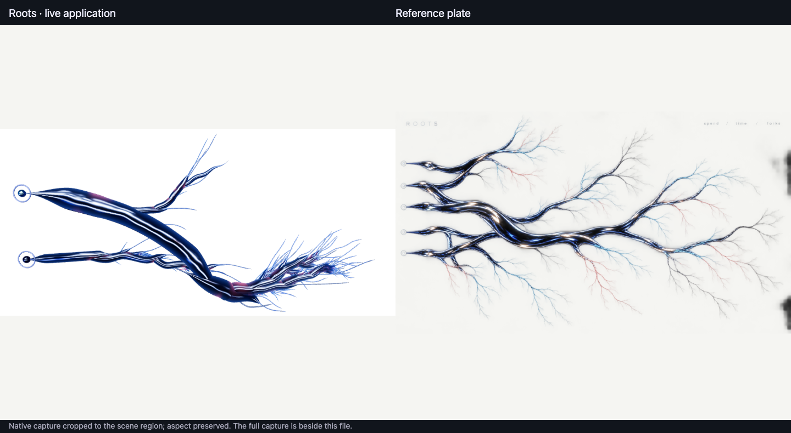

For the owner's eye. Both recordings are the running app at 2× while a real Symphony, which I launched through the app's deliberation card, forks off a thread and grows. Every tube is one recorded event; nothing on screen is fixture data. The camera drifts slowly so the chrome highlights can be seen moving; the roots themselves move only when new events arrive.
The Symphony launches just before the take. Its two workers fork off the thread and grow new branches as their turns and tool calls arrive (turns plus tool calls across the river 41 → 176). A light runs out along each new branch.
The same run, larger, on true black, while the workers were still working (224 → 249).

Still differs: the plate is one wide river of five roots fanning into many long, fine, sub-forking capillaries. This run holds two threads and one Symphony, so our river is two roots and a fork cluster. The worker branches are shorter and bushier than the plate's long capillaries, because workers fire many events a few seconds apart.
Full capture · efficient tier · efficient tier 757+ fps uncapped.
{kind=link}
{kind=link}